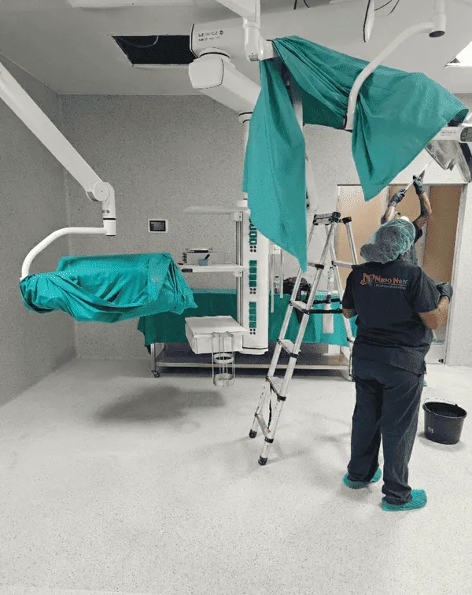

Cómo reclamar al seguro tras un incendio

"Es que con el seguro nunca se sabe…". Lo oigo mucho, y entiendo el recelo. Pero le voy a decir una cosa: la mayoría de las reclamaciones que salen mal es porque se cometieron errores evitables en los primeros días. Así que agárrese, que le doy la ruta buena, paso a paso y sin letra pequeña.
Cómo reclamar paso a paso
- Comunique en 7 días: Llame a su compañía dentro del plazo habitual y apunte el número de expediente.
- Documenta como detective: Fotos, vídeos y lista valorada de daños y enseres antes de tocar nada.
- Reciba al perito: Enséñele todo, entréguele fotos y el informe técnico de la empresa de limpieza.
- Aporte el informe técnico: La empresa especializada debe dar presupuesto e informe con fotografías detalladas.
- Revise antes de firmar: Compruebe que la indemnización cubre lo acordado antes de firmar el finiquito.
- Cobre y cierre: Una vez firmado, el proceso termina. Léalo todo con calma, sin prisas.
Errores que le pueden costar caro
- Tirar enseres antes del peritaje.
- Ponerse a limpiar el hollín por su cuenta y estropear materiales.
- Perder facturas y partes.
- Dejar pasar el plazo de comunicación.
¿Ve como no era para tanto? Orden, papeles y un buen informe técnico. Nosotros, de hecho, le acompañamos en esto: hacemos la limpieza y le damos toda la documentación mascada para su aseguradora. Usted, a recuperar la normalidad, que es lo que importa.
¿Y si la indemnización que me ofrecen es baja?
Pasa, y no hay que resignarse a la primera. Si la oferta de la compañía se le queda corta, tiene margen de maniobra, y es legal y normal usarlo:
- Pida el desglose por escrito. Que le detallen cómo han calculado cada partida. Muchas veces ahí aparecen olvidos.
- Aporte más pruebas. Fotos, facturas de lo dañado, y el informe técnico de la limpieza. Cuanto más documentado, menos margen para regatear.
- Solicite una contraperitación. Su póliza suele permitir nombrar un perito por su parte si no está de acuerdo con el de la compañía.
- Acuda al defensor del asegurado de la entidad y, en último término, a la Dirección General de Seguros.
No firme el finiquito con prisas ni con la mosca detrás de la oreja. Una vez firmado, se acabó la discusión. Si algo no le cuadra, primero pregunte; firmar siempre puede esperar a mañana.
Te puede interesar también: ¿Qué hacer si el seguro no cubre el incendio? · Qué documentos necesitas para reclamar al seguro · Peritaje tras un incendio: cómo funciona
Preguntas frecuentes
¿Qué plazo tengo para reclamar al seguro?
El plazo habitual de comunicación es de 7 días desde el siniestro. La reclamación se desarrolla después con el peritaje.
¿Puedo limpiar antes de que venga el perito?
No conviene. Documente con fotos y espere; limpiar o tirar enseres antes puede reducir la indemnización.
¿Y si no estoy de acuerdo con el perito?
Puede pedir explicaciones, aportar más pruebas o solicitar una contraperitación según su póliza.